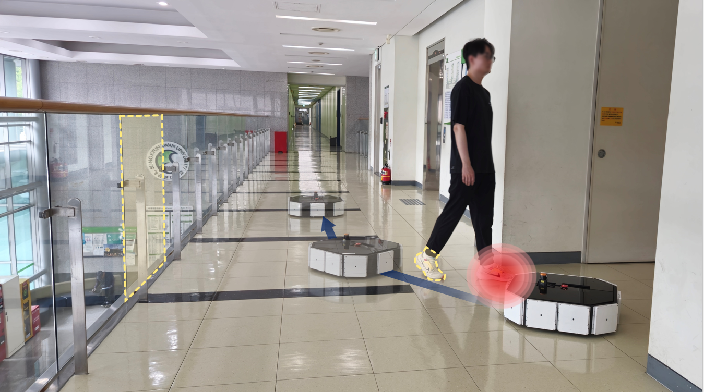
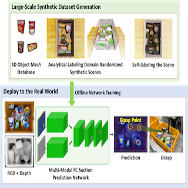

|
HyunChang Kang Hi there! I'm a PhD candidate at Robotics Innovatory, Sungkyunkwan University, South Korea, under the supervision of Prof.Hyouk Ryeol Choi My research is mainly focused on adaptive multi-modal sensor fusion(LiDAR + Radar + Capacitive Proximity Sensor) in mobile robotics. |
{kind=link}
Research |
|

|
Adaptive Measurement Model-Based Fusion of Capacitive Proximity Sensor and LiDAR for Improved Mobile Robot Perception
Hyun Chang Kang, Hong Sik Yim, Hyuk Jae Sung, *Hyouk Ryeol Choi IEEE Robotics and Automation Letters (RA-L), 2024 paper This study proposes an adaptive measurement model-based fusion algorithm that linearizes capacitive sensor data and integrates it with LiDAR using Gaussian synthesis, enhancing accuracy and real-time efficiency. |

|
Development of Adaptive Gripper Enhancing Power Grasp Range and Linearity
Issac Rhee, Chun Soo Kim, Heeyeon Jeong, Seung Jae Moon, Seunghwan Um, Yeong Gwang Son, Yong Bum Kim, Ho Sang Jung, Hyouk Ryeol Choi IEEE Access, 2024 paper Gripper design that applies a Grasshopper mechanism to improve fingertip movement. It also allows the fingertips to move towards the palm of the gripper after grasping an object, thereby expanding the range of object sizes that can be adaptively grasped. |
|

|
CoAS-Net: Context-Aware Suction Network with a Large-Scale Domain Randomized Synthetic Dataset
Yeong Gwang Son, Tat Hieu Bui, Juyong Hong, Yong Hyeon Kim, Seung Jae Moon, Chun Soo Kim, Issac Rhee, Hansol Kang, Hyouk Ryeol Choi IEEE Robotics and Automation Letters (RA-L), 2024 source code & dataset / paper Unknown object picking in cluttered bin-picking environment with a suction grasp detection neural network trained on a large-scale domain randomized synthetic dataset. |
|
Feel free to download this website's source code. Inspired by Jon Barron's website. |